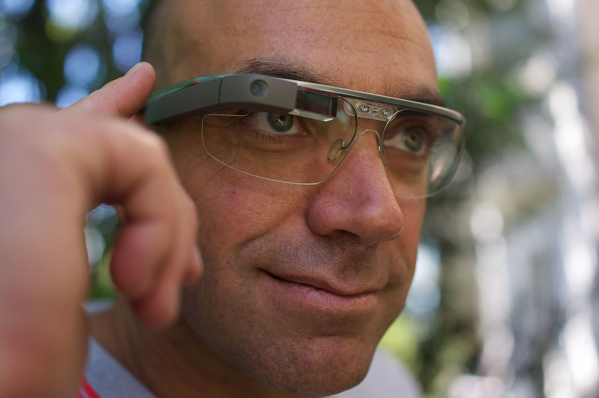
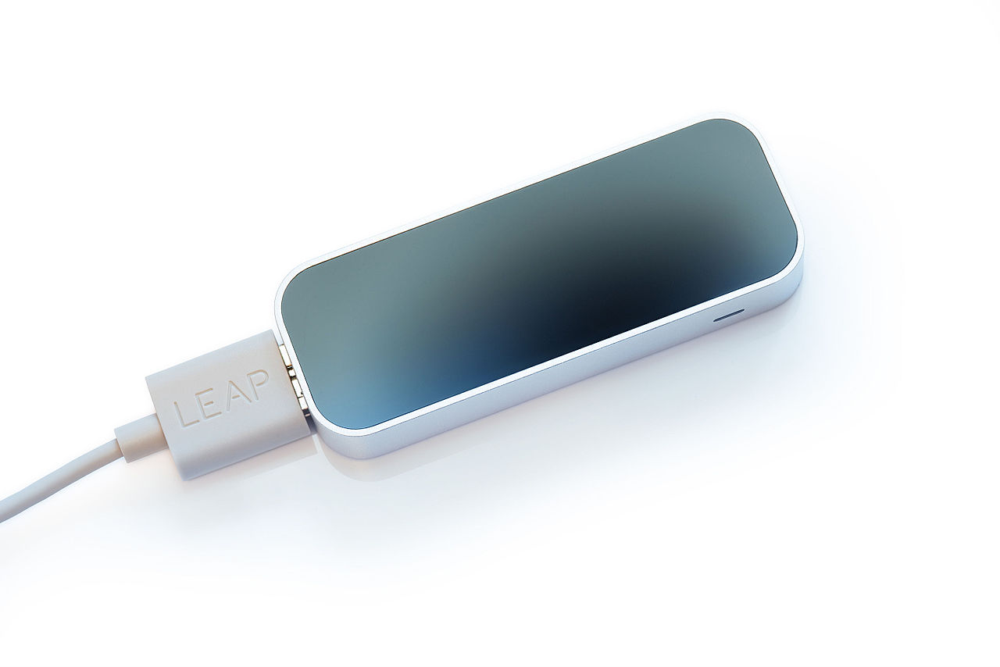
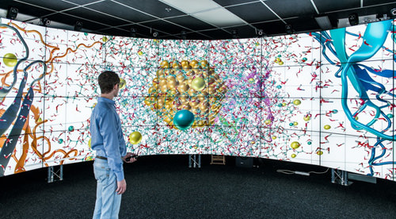
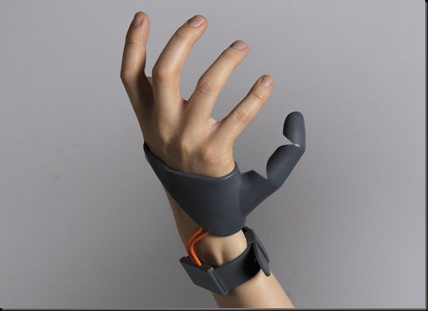
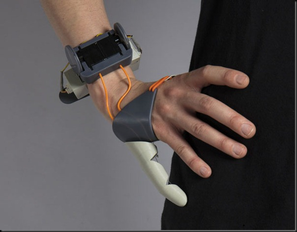

Google Glass

Not to be confused with Google Goggles. Google Glass is an optical head-mounted display designed in the shape of a pair of eyeglasses. It was developed by X (previously Google X) with the mission of producing a ubiquitous computer. Google Glass displayed information in a smartphone-like hands-free format. Wearers communicated with the Internet via natural language voice commands. Google started selling a prototype of Google Glass to qualified "Glass Explorers" in the US on April 15, 2013, for a limited period for $1,500, before it became available to the public on May 15, 2014. It also had a camera attached to it.

//Leap_motion
Leap motion
The Leap Motion controller is a small USB peripheral device which is designed to be placed on a physical desktop, facing upward. It can also be mounted onto a virtual reality headset. Using two monochromatic IR cameras and three infrared LEDs, the device observes a roughly hemispherical area, to a distance of about 1 meter. The LEDs generate pattern-less IR light and the cameras generate almost 200 frames per second of reflected data. This is then sent through a USB cable to the host computer, where it is analyzed by the Leap Motion software using "complex maths" in a way that has not been disclosed by the company, in some way synthesizing 3D position data by comparing the 2D frames generated by the two cameras. In a 2013 study, the overall average accuracy of the controller was shown to be 0.7 millimeters.
//Cave2
Cave 2
Cave2 is a hybrid reality environment that lets artists, scientists and engineers become fully immersed in their research. The Cave2 is a 360° wraparound structure consisting of 72 LCD panels, a 20-speaker surround sound system and a 10-camera optical motion tracking system.
//Firefox OS
Firefox Operating System
iOS and Android are great, but they each have their own rules and policies that certainly inhibit the creative efforts of developers. Mozilla has since decided to build a new mobile operating system from scratch, one that will focus on true openness, freedom and user choice. It’s Firefox OS.
Firefox OS is built on Gonk, Gecko and Gaia software layers – for the rest of us, it means it is built on open source, and it carries web technologies such as HTML5 and CSS3.
//Mechanical_third_thumb
Mechanical Third Thumb
 When's the last time you memorized a phone number? For many of us, we're already outsourcing parts of our brains to our devices. But imagine if the next gadget you bought wasn't a smartphone, but something to actually augment your body.
That's the premise of the Third Thumb, a new controllable prosthetic created by British product design student Dani Clode. The thumb is a controllable extra digit, complete with two motors and flexible hinges, giving the 3D-printed device the dynamic motion and range of a real thumb.